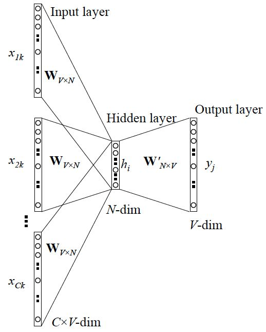

Word2vec是Google在2013年提出的算法, 可以使用稠密的向量来对单词(或者字符)进行表示. Word2vec算法是一种非常重要的算法, 不仅因为其在自然语言处理中应用广泛, 而且在其它一些领域, 也有深远的影响.
简介
Word2vec算法就是对词向量进行表示, 那么在word2vec之前, 就有原始的词向量表示方法, 即设定向量的维度为整个词汇表的大小, 对于每个具体的词, 将对应位置设为1, 其余位置为0. 这样的方法也称为one hot representation, 其缺点非常明显, 就是词向量本身很长, 很稀疏, 且词与词之间的关系并不能通过这样的向量进行刻画.
而与one hot representation相对的, 是distributed representation, 使用维度不大的向量进行表示, 向量是稠密的, 每个元素是一个浮点数. 这样可以把单词看成向量空间中的点, 而单词之间的关系, 可以通过这样的向量进行一定的刻画. 比如近义词在空间中离得比较近, 或者余弦相似度比较大. 又或者单词向量之间具有一定的逻辑性, 如:
那么, 要怎么样才能得到合适的词向量呢? 在word2vec之前, 已经有用神经网络DNN来训练词向量了, 一般可以采用一个三层的神经网络结构(输入层, 隐藏层, 输出层).
核心的思路, 是单词的共现, 即上下文中相邻的单词具有相似性, 单词的向量就应该更加接近, 反之亦然.
而输入和输出又是什么呢, 根据输入输出的不同, 可以分为:
- 输入为上下文, 输出为中心词.
- 输入为中心词, 输出为上下文.
然鹅, 经典的DNN并不能很好地完成学习词向量的任务, word2vec在其基础上, 用了一些方法进行优化和改进. 其中CBOW(Continuous Bag-of-Words)与Skip-Gram两种模型, 就对应上面提到的两种模式, 下面进行讲解.
CBOW与Skip-Gram
CBOW
CBOW模型的训练输入, 是某一个中心词的上下文(周围的词)对应的词向量; 而输出就是这个中心词的词向量.

如上图, 取上下文大小为4, 中心词是”learning”, 上下文对应的词有8个, 前后各4个, 这8个词对应向量是模型的输入.
由于CBOW使用的是词袋模型, 因此这8个词都是平等的, 也就是不考虑谁更近一些或者远一些, 谁在前面还是后面，只要在上下文之内即可.

CBOW的神经网络结构如上图, 上下文单词的词向量平均后, 得到隐藏层的向量, 然后在输出层使用softmax预测中心词. 但是需要注意的是, 这里的隐藏层, 并没有激活函数, 可以看做是想更加直接地学习词向量之间的关系, 而不是通过非线性变换之后的关系.
Skip-Gram
Skip-Gram与CBOW相反, 是用中心词, 来预测上下文对应的周围的词.

结构如上图所示, 可以想象的是, 相比CBOW, Skip-Gram学习的难度会更大, 更难以预测准确, 但是最终得到的词向量的表示却不一定比CBOW差. 原因是我们原本的目的就不是让模型预测得多么准确, 而是想通过这种方式, 得到对应的词向量, 即神经网络中的部分权重系数, 在这种情况下, 有时候学得更加困难, 反而效果更好. 我个人认为还有一种解释是, CBOW在学习时, 建立的是周围词的平均向量与中心词向量的关系, 而Skip-Gram这里是直接建立中心词与每个周围词向量的关系.
同时, 细心的同学一定也发现了, 前面CBOW计算一次softmax还好, Skip-Gram这里计算多次softmax会不会复杂度比较高. 是的, 其实计算一次softmax的复杂度就已经很高了, 因为词表一般来说很大, 通常在几十万甚至上百万, 这样的情况下想要在大语料库下进行充分学习, 是非常有难度的.
所以, word2vec使用两种方法, Hierarchical Softmax和Negative Sampling进行了优化.
Hierarchical Softmax
在将Hierarchical Softmax之前, 需要介绍一种数据结构, 即哈夫曼树(Huffman Tree).
哈夫曼树是一种树型结构, 输入为权值为$w_1,w_2,\dots ,w_n$的$n$个节点., 输出即为哈夫曼树, 其构建过程如下:
初始状态.
将$n$个节点, 看成$n$棵树的森林, 每棵树只有一个节点.
合并生成新树.
在森林中, 选择根节点权值最小的两棵树进行合并, 得到一棵新树. 这两个棵树分别作为新树的左右子树, 可以约定左子树根节点权值大于等于右子树根节点权值, 同时新树的根节点权值为左右子树根节点权值之和.
更新森林.
将新树加入森林, 对于的删除掉组成新树的两棵子树.
迭代.
重复以上两个步骤, 直到最后仅剩下一棵树, 即为哈夫曼树.
构建过程还是比较简单的, 那么哈夫曼树有什么好处呢? 比如我们想对一些事物(如单词)进行编码(如0-1编码), 使得常用的单词具有较短的编码, 不常用的单词具有相对较长的编码, 那么就可以使用哈夫曼树来实现.
在构建哈夫曼树前, 对每个单词设定权值, 可以正比于出现频率. 在构建好哈夫曼树后, 其叶子节点就是对应的单词, 并且越靠近根节点的叶子节点, 权值越大, 对应单词出现频率越高. 这时候可以从根节点开始进行编码, 如约定往左为1, 往右为0, 那么从根节点到叶子节点的路径形成的0-1串, 就是对应的编码.
在word2vec中, 就是采用的类似的形式, 在构建好词表对应的哈夫曼树后, 其内部节点相当于神经网络隐藏层, 叶子节点相当于输出层.
从根节点开始, 当想要到达某个叶子节点时, 路径是确定且唯一的, 那么以CBOW的形式来说明具体的算法流程, Skip-Gram类似:
建立哈夫曼树.
根据给定语料库, 建立哈夫曼树. 其中每个内部节点上, 有一个参数向量$\theta_i$, 与词向量维度相同.
周围词向量.
取中心词的周围词的向量的平均, 作为输入.
确定中心词路径.
确定从根节点到中心词对应叶子节点的路径.
沿路径进行计算.
在路径中, 每个内部节点上, 计算一个逻辑回归函数:
其中的$x_w$表示周围词向量的平均, $p$表示向左(为1)的概率. 那么从根节点到叶子节点的概率, 可以表示为沿途所有内部节点上概率的乘积.
更新参数.
在有了上面的一条路径的概率后, 就可以使用MLE进行优化. 每次可以使用随机梯度法, 更新一个样本.
终止算法.
当达到终止条件, 如梯度收敛时, 可结束算法.
相比原本为$O(N)$的时间复杂度, 使用哈夫曼树以后, 时间复杂度变成了$O(\log(N))$, $N$为词表大小, 并且由于哈夫曼树中高频词靠近根节点. 实际的平均时间还会更少一些.
Negative Sampling
Negative Sampling, 即负采样, 不仅可以使用在word2vec当中, 而且可以当成是一种通用的方法, 在机器学习当中发挥关键作用.
相比哈夫曼树, 负采样的方法显得更加简单.
这里以CBOW的模式来进行说明, Skip-Gram与其类似. 在一个滑动窗口中, 假设窗口大小为$c$, 则存在一个中心词, 与前后文$2c$个周围词, 那么这个中心词和这$2c$个周围词是相关的, 视作一组正样本. 而在这个滑动窗口之外的词, 都可以视作不相关的负样本, 那么可以用某种方式进行采样, 假设采样了$n$个词, 则与周围词一起形成$n$组负样本.
对于每一个样本而言, 有两个参数, 一个是作为词本身的向量$w_i$, 一个是作为周围词的向量$context(w_i)$, 对应一个词在这里有两种角色: 非周围词, 周围词.
通过一个窗口采样得到的$1+n$组样本(对应$2c\times (1+n)$个样本), 可以看做一个二分类问题, 即相关则为1, 不相关则为0, 概率为:
然后使用梯度下降进行更新参数即可.
再详细说一下负采样时的具体做法, 每个词对应的长度是不一样的, 高频词对应的概率大, 低频词对应概率小. 在word2vec中, 每个词的采样概率由下式决定:
然后在一个特别长的数组上, 如$1\times10^8$的数组上, 按词表的累计概率分布, 将词对应到数组的位置上. 在采样时, 每次使用随机数, 在数组上进行采样即可.
为什么要设置这样一个采样机制呢? 这个机制个人认为其实是比较重要的, 回想TF-IDF的原理, 在评判某个单词对于文章的影响时, 即考虑了其在文章出现的频率, 又考虑了单词在其它文章中也经常出现. 在word2vec这里, 对于一些常出现的词, 肯定会频繁地作为其它一些词的周围词, 但是这些词真的与其它一些词相似吗, 它们只是本身经常出现而已. 所以通过上面这个负采样的机制, 可以抑制这种情况的发生, 即让那些不是经常出现, 但却共现的词更加相似.
小结
以上介绍了word2vec的算法原理, 可以发现其原理其实并不复杂.
在通过word2vec得到单词(字符)的向量表示后, 可以用来做什么呢? 可以用于自然语言处理中的各项任务, 如在使用RNN进行分类, 标注, 生成的时候, 就可以使用在大语料库上预训练好的word2vec词向量, 来作为每个单词的Embedding. 一般来说在一些困难的任务上, 或者训练样本较少的时候, 相比随机初始化, 可以获得更好的效果, 且收敛更快. 此外, 还可以使用word2vec来对文本进行表示, 如向量平均或者加权平均, 然后可以进行文本分类等.
而除了在自然语言处理, 受到word2vec的启发, 出现了node2vec, item2vec这样的算法, 甚至万物皆可Embedding.
然鹅word2vec也有一些问题, 其中比较明显的就是其向量表示, 是上下文无关的. 诶, 不是说就是训练的时候, 依靠上下文进行训练的吗, 怎么这里又成了上下文无关了呢? 这里的意思是说, 在使用word2vec时, 一个单词无论在什么语境下, 其Embedding都是固定的, 比如Apple这个单词, 可能是水果的苹果, 也可能是企业的苹果, 而一个固定的向量如何表达完全不同的两个意思呢?
所以, word2vec有很多用途, 是一种非常重要的算法, 但是也有缺点存在. 而后续的一些新的算法, 如BERT, 运用新的架构与设计, 可以得到上下文相关的Embedding, 这些以后再讲.